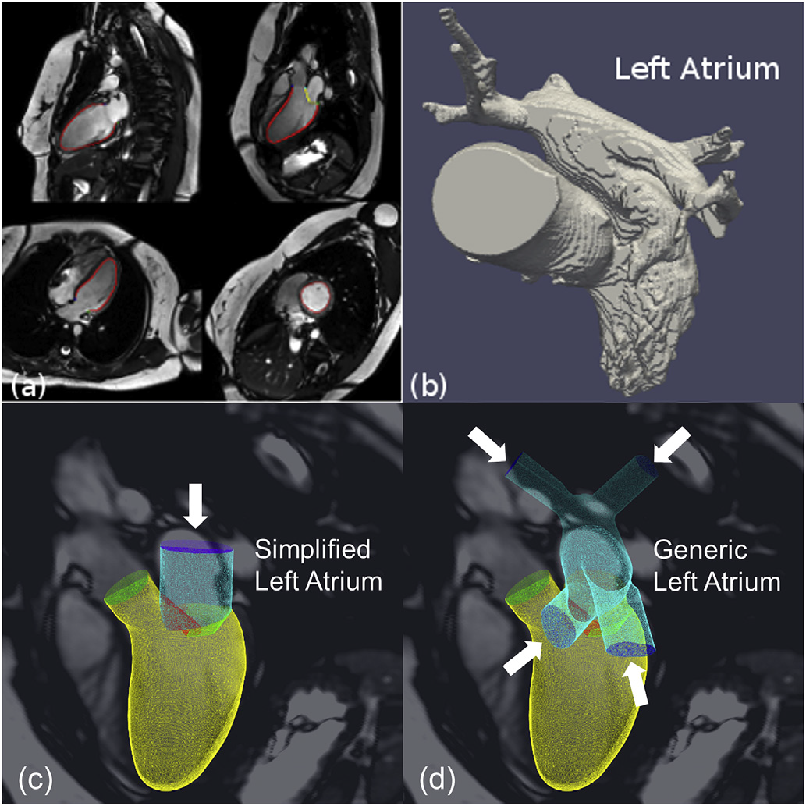

<section>
  <div class="qualifications">
    <ul>
      <li>
        Years of experience in simulations of cardiovascular diseases and
        devices and
        <span style="font-style: italic">in-vitro</span> measurements.
      </li>
      <li>
        Excellent skills in generations of complex numerical models for
        simulations.
      </li>
      <li>Good knowledge of cardiovascular anatomy and physiology.</li>
      <li>
        Proficient in DICOM image anonymization and cardiac image processing
        using Machine Learning.
      </li>
      <li>
        Competent knowledge on DICOM PACs. Able to liaise with engineers,
        clinicals and scientists.
      </li>
      <li>Comfortable with Windows and Linux operating system.</li>
      <li>
        Experience in programming for DICOM image processing and anonymization
        using Python and C++.
      </li>
    </ul>
    <figure>
      
      <figcaption>From medical images to numerical model</figcaption>
    </figure>
    
  </div>
</section>
